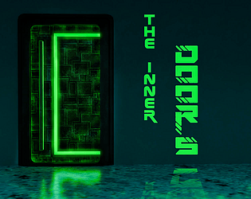
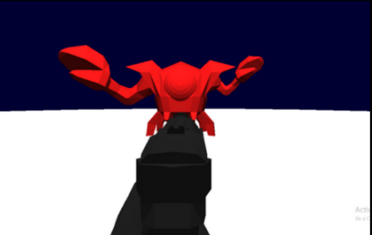

Portfolio de Programación
Empecé a programar cuando iba al instituto porque siempre me habían gustado los videojuegos y quería probar a hacerlos por mi cuenta. Esto me llevo a hacer en python un buscaminas y un Snake Game con gráficos por consola. Pero ha sido a lo largo de la carrera de Diseño y Desarrollo de Videojuegos donde he aprendido la mayoría de las bases de programación que sé hoy en día. En los últimos años he aprendido muchos lenguajes de programación, desde ensamblador, hasta C# pasando por HTML, octave y Java. Sin embargo, reconozco que el aprendizaje nunca termina, y siempre hay más por descubrir. Durante mi formación, he tenido la oportunidad de trabajar en una variedad de proyectos. Estos proyectos no solo me han ayudado a fortalecer mis habilidades técnicas, sino que también me han enseñado a resolver problemas complejos y a pensar de manera más creativa, además de a tener una buena comunicación con mis compañeros de grupo y una buena organización como equipo. A medida que continúo desarrollando mis conocimientos, algunos de los aspectos más recientes que he aprendido se reflejan en los juegos que presento a continuación, cada uno representando una parte importante de mi evolución como programador y desarrollador de videojuegos.
Space Combat Rush 3D

Desarrollado en Unity
Sinopsis
Es un Hero Shooter de naves multijugador en el que los jugadores luchan en 1 vs 1 hasta derrotar al rival al mejor de 5 rondas. La gracia del juego está en que cada jugador puede personalizar el aspecto y el arma que usará para cada partida.
Sistemas programados
Comunicación entre clientes y servidor para el input del jugador y la personalización de cada nave. Implementación de la arquitectura básica del programa. Mecánicas básicas del juego y sistema de matchmaking.
Aprendizaje obtenido
Este proyecto sigue en curso, pero de momento he aprendido cómo desarrollar proyectos algo más grandes, empezando por diseñar una buena estructura para el código y un diagrama UML a partir del cual crear las interfaces y clases abstractas necesarias. También he aprendido mucho acerca del funcionamiento interno de los juegos multijugador y cómo hacer una comunicación adecuada para cada mecánica.
Spade

Desarrollado en Unity
Sinopsis
Es un juego de plataformas en 3D para un jugador, en el que eres una rana que tiene que llegar a lo más alto del pozo en el que se encuentra para conseguir un artefacto muy poderoso (Aunque nadie dijo que fuera a ser fácil). Está inspirado en juegos como Jump King o Getting Over It.
Sistemas programados
Mecánicas básicas del juego, incluyendo el movimiento del personaje al andar, la mecánica de salto (que cuanto más lo cargas más salta) y la barra de vida del personaje.
Aprendizaje obtenido
Este juego era para una asignatura en la que aprendimos a usar patrones de programación, por tanto, lo que más aprendí haciéndolo fue a utilizar patrones como el Singleton y el Command.
The Inner Doors
Desarrollado en Unity
Sinopsis
Es un Thriller para un jugador en el que te encuentras en un hotel futurista como testigo de un crimen y tienes que descubrir quién es el asesino. Es un juego de carácter narrativo en el que las mecánicas giran entorno a unos minijuegos que te darán información sobre el asesino al superarlos.
Sistemas programados
Minijuegos de Tiro al pato y Carrera de coches y debugging general del juego.
Aprendizaje obtenido
Con este juego conseguimos el 2º puesto de una Gamejam y lo presentamos en el Guerrilla Game Festival. Durante el desarrollo aprendí que meter muchas mecánicas tan diferentes en un juego puede resultar algo complejo y que es importante la planificación completa del proyecto antes de ponerse los pantalones de programar.
Revolund

Desarrollado en Unity
Sinopsis
Es un juego RTS por turnos que toma lugar en un mundo en el que la gente Cyberpunk tiene dominada a la Steampunk. En él, el jugador tiene que ayudar a liderar la revolución contra el Cyberpunk.
Sistemas programados
Funcionamiento de todas las interfaces, incluyendo los ajustes del juego y la tienda de tropas dentro de la partida. La implementación de un tutorial y de los movimientos e interacciones de las tropas
Aprendizaje obtenido
Este juego fue un trabajo para la asignatura de Interacción Persona-Máquina y tengo un recuerdo amargo de este trabajo porque tuvimos que echar a uno de los integrantes del grupo. De todas formas, aprendí la importancia de que los juegos tengan tutoriales, una buena usabilidad y opciones de accesibilidad.
KROOM
Desarrollado en C++ y OpenGL
Sinopsis
Es un Shooter muy básico basado en el DOOM en el que el jugador tiene que sobrevivir el máximo tiempo posible sobre una plataforma en la que aparecen cangrejos alienígenas que tiene que derrotar.
Sistemas programados
Mecánicas de movimiento y disparo del jugador. Mecánicas de movimiento de los enemigos. Motor gráfico y del juego.
Aprendizaje obtenido
Este juego fue para una asignatura en la que teníamos que crear un juego de cero, creando nuestro propio motor gráfico, por tanto, aprendí mucho sobre cómo funcionan por debajo los motores de juegos y cómo renderizan las imágenes en tiempo real, además de cómo programar en C++ y OpenGL.
Mr. Erazer's Revenge

Desarrollado en Unity
Sinopsis
Es un juego de plataformas 2D bastante difícil en el que eres una goma de borrar que quiere derrotar al malvado Monsieur Lapiz.
Sistemas programados
Nivel 2 del juego, en el que el jugador puede moverse y atacar, pero no saltar. Implementación de todas las animaciones respecto al input.
Aprendizaje obtenido
Este fue el juego que presentamos en nuestra primera Gamejam de la carrera. De él aprendimos muchísimo sobre cómo usar Unity y que los juegos tienen que ser intuitivos para el jugador.